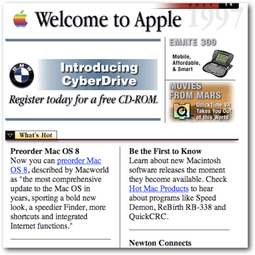

History: The Browser
 1994
1994- 1995
- 1995
- 2003
- 2004
- 2008
“Web technology is the development of the mechanism that allows two or more computer devices to communicate over a network.”
“Any programming language, piece of hardware or software that allows applications to be built for use on the web”
1994Apple.com, 1995
Apple.com, 2013